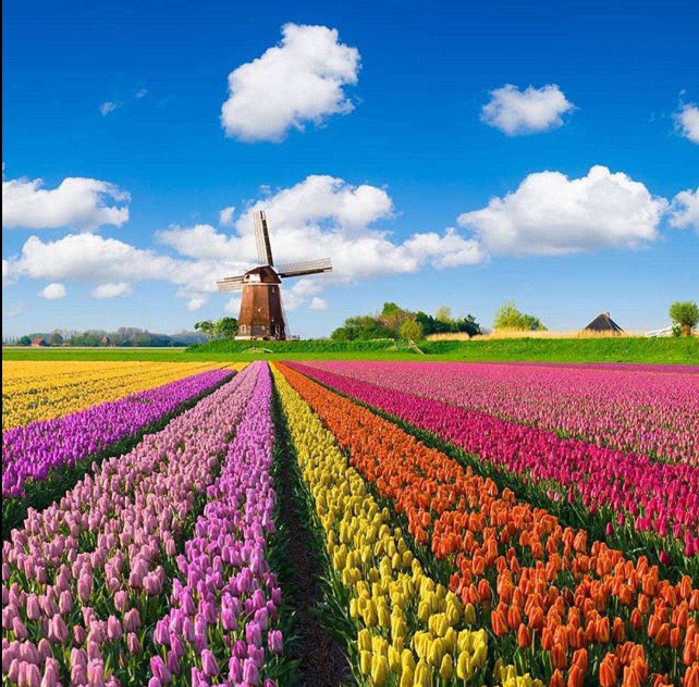
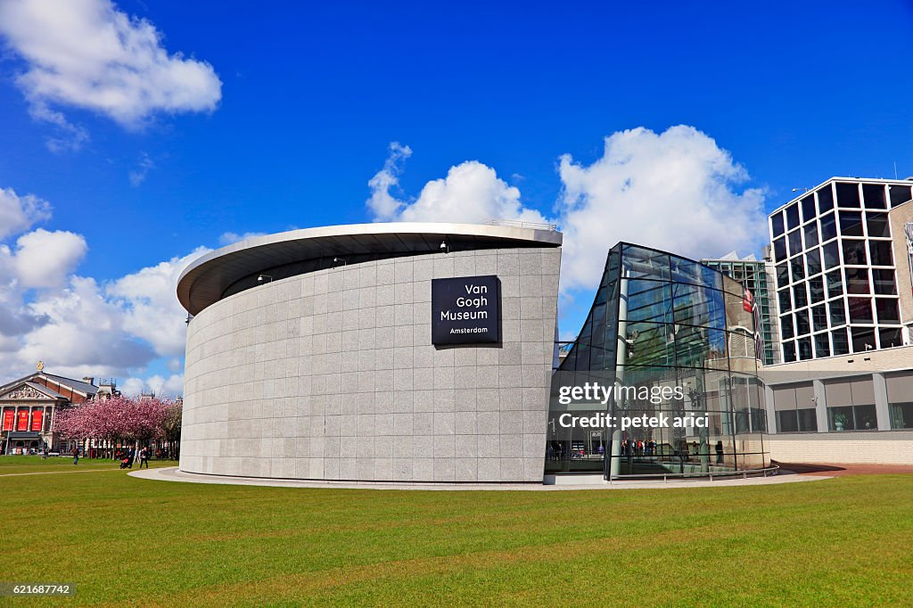

"Amsterdam: Unwind in the Heart of History, Art and Endless Canals"

TULLIP FLOWER STRIP
Visiting the tulip fields in Amsterdam is not only an opportunity to enjoy the natural beauty of the flowers but also a chance to immerse yourself in Dutch culture and history. It's a unique and memorable travel experience, particularly if you have an appreciation for flowers and the outdoors.

VAN GOGH MUSEUM
A must-visit museum for the fans of art and history. With more than 200 paintings, 500 drawings, and 700 letters related to him, this museum homes to the world’s largest collection of Vincent Van Gogh’s paintings and artifacts.
The collection is grouped into two periods of the painter’s artistic life. His realistic works periods, which includes the famous work called “The Potato Eaters”, and the Impressionist period of his works, which hosts the most famous artwork of him, “Vase with Sunflowers”.